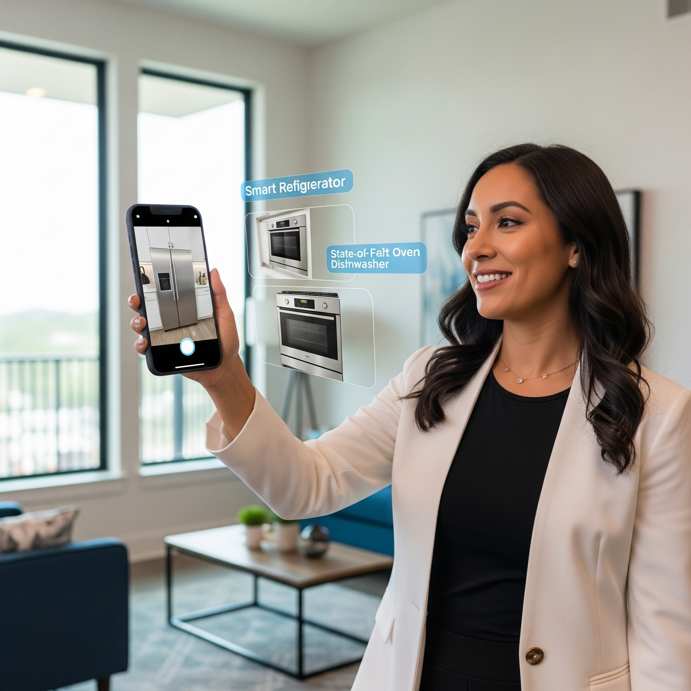

(A professional woman in her late 30s, offering a property to clients while using a phone to demonstrate AR features, with floating hints around household appliances.)
Sarah Mitchell has revolutionized how properties are shown and managed in Austin's competitive rental market. As the lead agent at Luxe Property Management, she oversees two dozen high-end properties, each requiring careful attention to detail and constant marketing.
The real magic happens after booking. Sarah has programmed AR instructions for every appliance and system in her properties. Guests simply point their phones at the thermostat or coffee maker to see step-by-step instructions, dramatically reducing the "how does this work?" calls that used to fill her evenings.
Between showings, Sarah checks the app's pricing dashboard, adjusting rates based on real-time market data. The automated suggestions help her maximize revenue while keeping occupancy rates high. For Sarah, this technology isn't just convenient—it's transformed her business and set her apart in a crowded market.